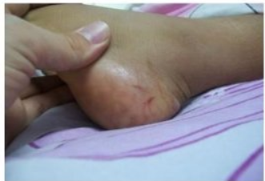

5 Things to Know About Rattlesnakes and Their Babies
By The University of Arizona | August 6, 2014
Arguably the most dangerous snake in Arizona, rattlesnakes are active
year-round in the state. But baby rattlesnakes are born in July and
August, making the months especially dangerous for hikers, golfers,
children, and others at high risk of exposure to rattlesnake bites.

-
Baby rattlesnakes range in length from 5 to 12 inches and are often
camouflaged by brush and grass.
-
Baby rattlesnakes do not have rattles until they first shed their skin,
so there will be no infamous "chice-chica" sound before they strike.
-
Despite their small size, baby rattlesnakes have enough venom to be very
dangerous if they bite a human.
-
Adult rattlesnakes do not always rattle an audible warning before they
strike, especially if they are surprised.
-
It's a good idea to call the poison center if you see an unidentified
snakebite or wound, even if you feel no pain. With the lack of telltale
rattle warning, people can be bitten without knowing what has happened
and they may notice their symptoms and attribute them to a snakebite.
If you are bitten by a rattlesnake, it is important to seek medical
attention immediately. Do not try to suck out the venom or apply a
tourniquet.
The Arizona Poison and Drug Information Center can be reached at
800-222-1222.
Share:
Facebook
Twitter
Linkedin